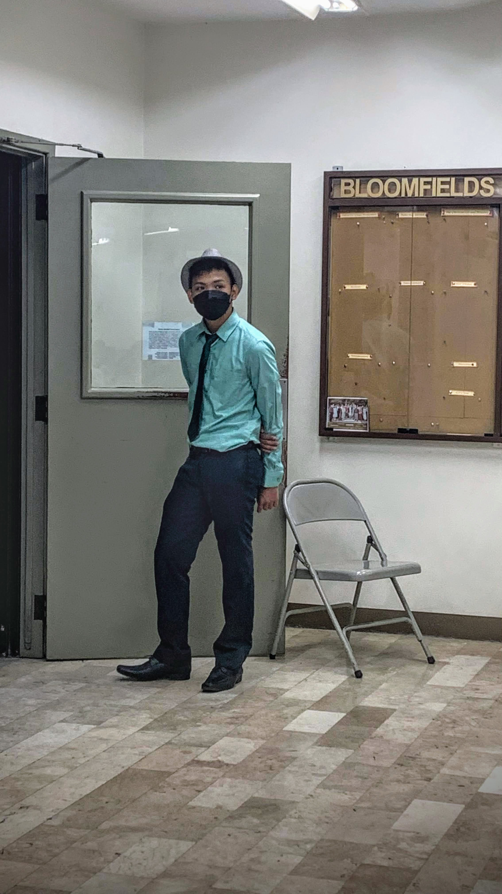

I actually dont like pictures that's why I look awkward.But sometimes I do like pictures when I want to keep the feeling I feel at a certain time.I have a lot of stolen pictures.

like this one and the other one on top.a lot of my pictures was actually not taken by me like this one and the other one on top.I love going outside.later you can see this bike again in the hobby page.I forgot where this is but I still remember the feelingI love mirror selfies.